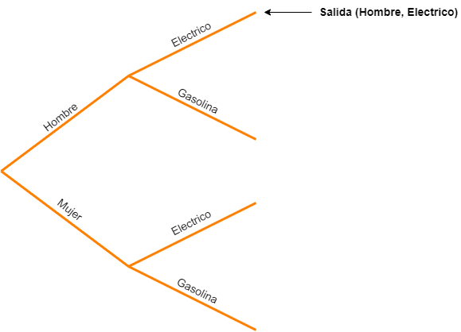
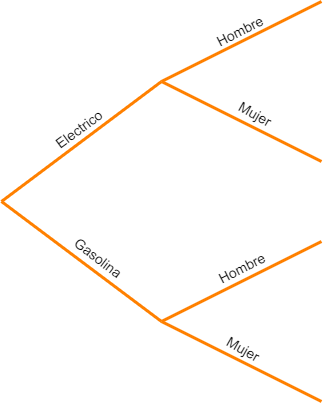
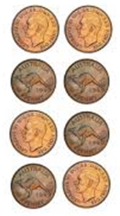

Experimentos y eventos
Contents
import numpy as np
import pandas as pd
from scipy.stats import trim_mean
Experimentos y eventos#
Experimento#
Definición
Un experimento es una operación planificada que se realiza en condiciones controladas. Si el resultado (producto del experimento) no está predeterminado, se dice que el experimento es aleatorio.
Un experimento consiste en un procedimiento y unas observaciones. Por ejemplo un experimento podria ser lanzar una moneda no cargada (simulacion). Esto implica:
Procedimiento: Lanzar una moneda varias veces e ir anotando los resultados en una tabla.
Observaciones: Observar el lado de la moneda (cara o sello) despues de que la moneda es lanzada.
La siguiente tabla muestra algunos ejemplos de experimentos:
Experimento |
Procedimiento |
Observaciones |
|---|---|---|
Lanzar una moneda tres veces |
Lanzar una moneda varias veces e ir apuntando los resultados en una tabla |
Posibles observaciones:
|
Lanzar una par de monedas |
Lanzar un par de monedas varias veces e ir anotando los resultados en una tabla |
Salida (cara/sello) de cada moneda |
Contar el numero de estudiantes que asisten a clase |
Llamar a lista cada clase |
La cantidad de estudiantes que asisten |
Determinar la calidad del suerño |
Medir la hora de acostada y levantada y apuntarlas en una tabla |
Posibles observaciones:
|
Espacio muestral#
Antes de definir el concepto de espacio muestral, es conveniente definir el concepto de salida:
Por ejemplo si un experimento consiste en lanzar un dado no cargado, la salida consiste en uno de los posibles valores que cae en la cara.
Espacio muestral
El espacio muestral (\(S\)) de un experimento es el conjunto de todos los resultados posibles.
Existen 3 formas de representar un espacio muestral:
Hacer una lista de posibles resultados.
Crear un diagrama de árbol.
Crear un diagrama de Venn.
Ejemplo 1#
Considere un experimento para investigar si es más probable que los hombres o las mujeres elijan un auto electrico en lugar de uno a gasolina al comprar un Honda Civic en un concesionario de automóviles en particular. El Honda Civic está disponible en ambas variantes. En este experimento, se seleccionará al azar un cliente entre los que compraron un Honda Civic. Se determinará el tipo de vehículo adquirido (electrico o a gasolina) y se registrará el sexo del cliente.
Antes de el cliente es seleccionado, el resultado de este experimento casual es desconocido para nosotros. Sin embargo, sabemos cuáles son los posibles resultados (espacio muestral).
Por ejemplo, si los resultados se representan como una lista tenemos:
Mujer compra auto electrico.
Mujer compra auto a gasoluna.
Hombre compra auto electrico.
Hombre compra auto a gasoluna.
Una forma mas resulmida consiste en representar las salidas anteriores usando pares ordenados de modo que:
S = {(hombre, electrico), (mujer, electrico),
(hombre, gasolina), (mujer, gasolina)}
En la representación en la que se usa el diagrama de arbol para representar espacio muestral para identificar un resultado especifico (en este ejemplo), se recorre el arbol seleccionando primero la rama correspondiente al sexo (Masculino/Femenino) del comprador y luego la rama correspondinete al tipo de vehiculo (Electrico/Gasolina). La siguiente. En la siguiente figura se resalta el caso en el que la salida corresponde a la adquisición de un auto electrico por parte de un hombre:

Como en este caso, en la elección del automovil no importa el orden de la selección, no importa cual rama va primero y cual despues de modo que una representación equivalente se muestra a continuacuón:

Eventos#
Cuando el resultado consisten en exactamente una sola salida, decimos que el evento es simple.
Usualmente se emplean letras mayusculas (\(A\), \(B\), \(C\), …) o letras con subindices (\(E_1\), \(E_2\), \(E_3\), …) para representar eventos.
Ejemplo 2#
Teniendo en cuenta el experimento analizado en el ejemplo 1 (adquisión del onda civic). Podemos definir los siguientes eventos:
M: El auto fue adquirido por un hombre.
F: El auto fue comprado por una mujer.
G: El tipo de carro es de gasolina.
E: El tipo de carro es electrico.
Se pide:
¿Cual es el espacio muestral teniendo en cuenta esta representación?
\(S = {ME, FE, MG, FG}\)
Encuentre los eventos simples de cada caso.
\(E_1 = ME\)
\(E_2 = FE\)
\(E_3 = MG\)
\(E_4 = FG\)
Suponiendo que el evento de interes consiste en todas las salidas cuando un auto electrico es elegido tenemos:
Evento en el que el comprador elegido es mujer:
Ejemplo 3#
Un experimento consiste en lanzar una moneda no cargada. ¿Cual es el espacio muestral asociado al experimento?
Inicialmente definimos los siguientes eventos:
H: el resultado de lanzar la moneda es cara.
T: el resultado de lanzar la moneda es sello.
De este modo, el espacio muestral del experimento esta dado por:
Ejemplo 4#
Suponga que se lleva a cabo un experimento que consiste en lanzar dos veces una moneda imparcial. Si H, es el evento en el cual el resultado es cara y T es el evento cuyo resultado es sello.
¿Cual es el espacio muestral?
La siguiente figura muestra las difentes posibilidades a la salida:

De este modo, segun lo anterior, el espacio muestral para este experimento es:
\[S = {HH, HT, TH, TT}\]Llenar la siguiente tabla:
|——|——|——| |Evento|Descripción|Resultado|| |\(E_1\) |Que salga al menos un sello|| |\(E_2\) |Que las salidas sean las mismas|| |\(E_3\)|Que la primera moneda sea cara||
A continuación se muestra la tabla llena:
|——|——|——| |Evento|Descripción|Resultado| |\(E_1\) |Que salga al menos un sello|\(E_1 = {TH, HT, TT}\)| |\(E_2\) |Que las salidas sean las mismas|\(E_2 = {HH, TT}\)| |\(E_3\)|Que la primera moneda sea cara|\(E_3 = {HH, HT}\)|
Simulación#
Poner un ejemplo
Ejemplos#
Ejemplo 1#
Asuma que la altura (en cm) de los estudiantes de una clase es como sigue: 90,102,110,115,85,90,100,110,110. ¿Cual es el promedio de alturas?
Solución usando código Python#
# Implementacion de la media
def media(data):
return sum(data)/len(data)
# Test
heights = [90,102,110,115,85,90,100,110,110]
mean_height = media(heights)
print("Alturas (cm):", heights)
print("Promedio de las alturas (cm):", mean_height)
Alturas (cm): [90, 102, 110, 115, 85, 90, 100, 110, 110]
Promedio de las alturas (cm): 101.33333333333333
Referencias#
Statistics Openstax (https://openstax.org/details/books/statistics)
Introduction to Statistics and Data Analisys (Roxy Peck, Chris Olsen, Jay L. Devore)
The practice of Statistics (Starnes, Yates, Moore)
Probability and Stochastic Processes. A friendly introduction for Electrical and Computer Engineers (Yates, Goodman).
https://discovery.cs.illinois.edu/learn/Simulation-and-Distributions/Law-of-Large-Numbers/